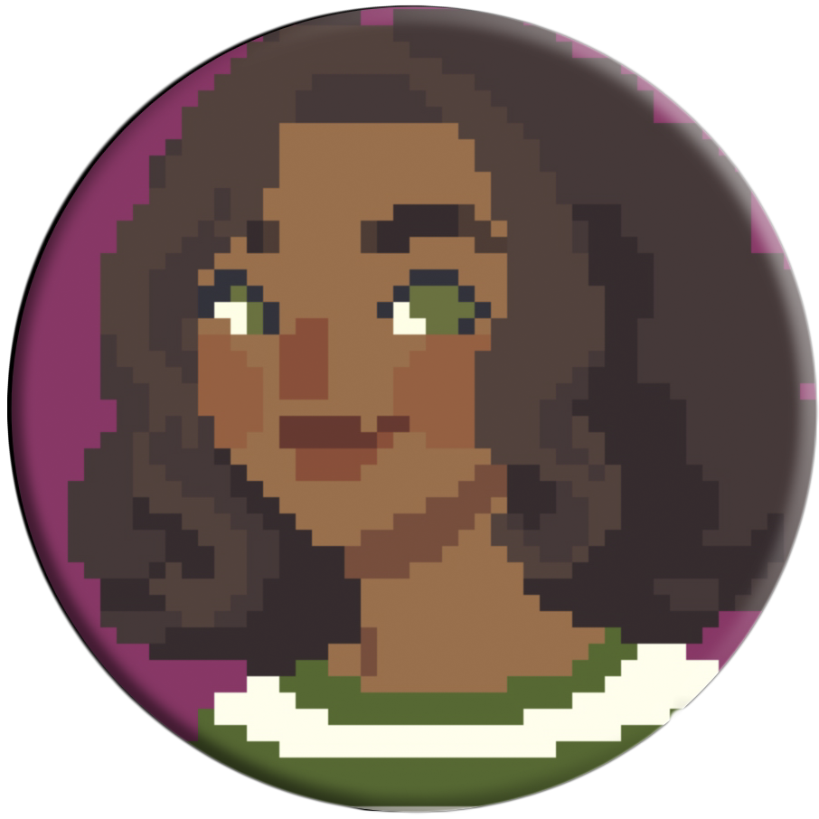
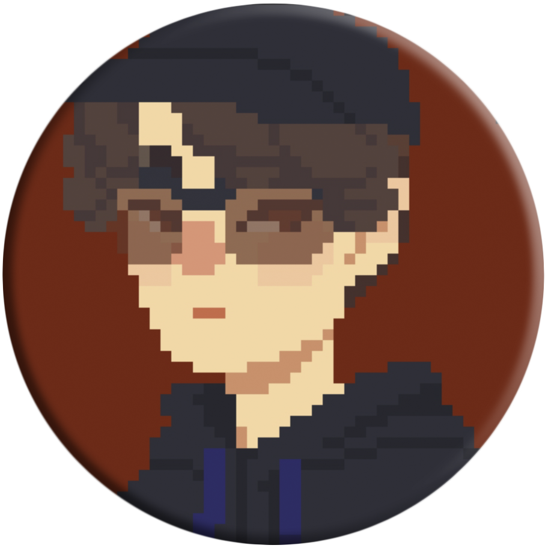

Brenda tem 36 anos e ama caminhar. Durante suas caminhadas, sempre que passa em frente à antiga rodoviária da cidade entra para comer o seu sanduíche favorito.
Jogar
Marcos tem 45 anos e possui um temperamento forte. Mora próximo a uma rodoviária. Costuma receber os novos visitantes que chegam à sua pequena cidade sempre que tem um tempo livre.
Jogar

Vinicius tem 32 anos e seu hobby favorito é viajar. Costuma ir para longe de sua pequena cidade do interior para visitar sua família na capital.
Jogar